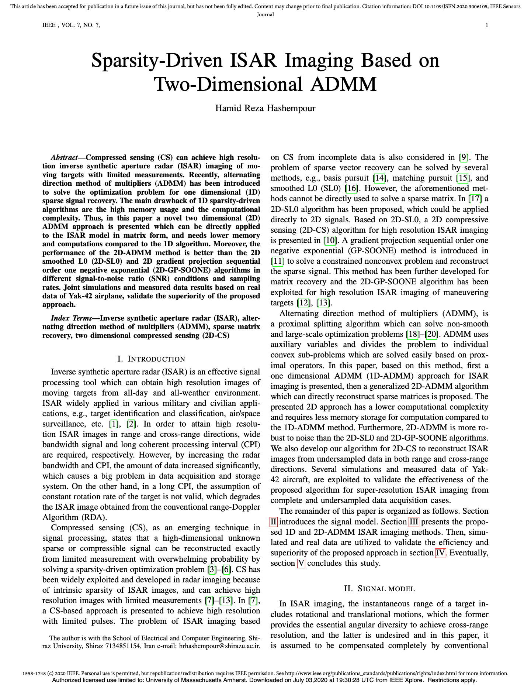

一句话结论
这篇文章把 ISAR 稀疏成像从“先向量化、再解一维大问题”改写成“直接对二维图像矩阵做 ADMM”， 利用部分傅里叶矩阵的行正交性消掉大规模求逆，在保持同一优化目标的同时显著降低内存和计算负担。
关键在于保留二维可分离结构，不显式构造 Fr ⊗ Fa； 再借助 Woodbury 恒等式和部分傅里叶矩阵的正交性，将每轮最难的线性求解变成两侧傅里叶变换。
它要解决什么问题
ISAR 依靠目标相对雷达的转动形成方位向孔径。距离向分辨率依赖大带宽，方位向分辨率依赖较长的相干处理时间； 二者都会增加采集、传输和存储压力。与此同时，飞机等目标在成像平面上通常可近似为少量强散射中心，因此图像天然具有稀疏性。
论文将 2D-ADMM 与 2D-FFT、2D-SL0 和 2D-GP-SOONE 比较，关注三个问题： 完整采样下的超分辨率、不同 SNR 下的抗噪性，以及距离和方位同时欠采样时的恢复能力。

从散射中心到矩阵模型
论文先假设平动已被补偿，目标在较短 CPI 内近似匀速转动，并且小转角近似成立。完成距离压缩和越距离单元走动补偿后， 每个散射中心对距离频率和慢时间分别产生可分离的相位项，所有散射中心叠加后可写成二维矩阵模型：
| 量 | 论文维度 | 含义 |
|---|---|---|
| S | N × M | N 个脉冲、M 个距离频率单元的观测 |
| X | P × Q | 待恢复的二维散射系数；超分辨率时 P > N、Q > M |
| Fa | N × P | 方位向部分傅里叶矩阵 |
| Fr | M × Q | 距离向部分傅里叶矩阵 |
| Z | N × M | 加性复高斯噪声 |
利用图像稀疏性，论文求解带 ℓ1 正则项的最小二乘问题：
平动需要事先补偿，转速在 CPI 内近似恒定，小转角线性化有效，MTRC 已被校正。论文明确没有处理相位误差和自动聚焦问题。
2D-ADMM 是怎样工作的
ADMM 引入辅助矩阵 B，令 X = B：数据拟合留给 X，稀疏正则留给 B， 再用缩放对偶变量 V 约束两者一致。每轮包含三个闭式步骤。
-
图像更新：保证数据一致性
先由当前稀疏变量和对偶变量组成 D = B − V，再用观测残差修正 D。部分傅里叶矩阵的行正交性让这个步骤不需要大矩阵求逆。
-
辅助变量更新：逐元素软阈值
B = Sλ/δ(X + V)。幅度小于阈值的系数被压到零，其余系数按幅度收缩，从而产生稀疏图像。
-
对偶更新：逼近 X = B
V ← V + X − B。它累计数据一致性解与稀疏解之间的偏差，推动两者在后续迭代中一致。
普通 2D-ADMM
直接做矩阵乘法，表达清楚，也允许显式传入满足条件的部分傅里叶字典。
快速 2D-ADMM
把上述左右乘法换成 FFT/IFFT，单轮复杂度可接近 O(n log n)，但依赖规则的傅里叶字典结构。
欠采样情形下，论文在方位和距离两侧分别加入二值选样矩阵 Ψa、Ψr。 因为这些矩阵由单位阵抽取行得到，同样满足行正交，Woodbury 化简仍然成立，这就是论文所谓的 2D-CS 扩展。
为什么二维形式更省
传统写法把 X 按列堆成向量 x，并构造 Φ = Fr ⊗ Fa， 得到 s = Φx + z。数学上完全等价，工程代价却相差很大。
论文给出的 1D 复杂度
在 P=Q 的简化假设下，最坏量级写为 O(P4MN)。显式大字典既占内存，也使矩阵向量运算昂贵。
论文给出的 2D 复杂度
矩阵版本最坏量级为 O(P3)；论文称相对于一维形式获得 O(PMN) 的量级收益。
1D-ADMM 与 2D-ADMM 理论上求解同一个 ℓ1 正则问题；二维形式只是利用了算子的可分离结构，避免不必要的展开。
论文给出了什么证据
1. 合成点目标
仿真使用 10 GHz 载频、500 MHz 带宽、50 Hz PRF、50 个脉冲和 50 个距离单元；场景含 11 个理想点散射中心。 重建网格取 100 × 100，即两个方向都做 2 倍超分辨率。论文比较 SNR −10 至 30 dB，以及采样率 0.1 至 1 的 NMSE。

2. Yak-42 实测数据
原始数据含 256 个脉冲，每个脉冲 256 个采样点；雷达中心频率 5.52 GHz、带宽 400 MHz、脉冲时宽 25.6 μs。 完整采样实验使用 N=64、M=256，并设置 P=2N、Q=2M。作者分别加入 10、5、0 dB 噪声，用图像熵衡量聚焦程度。
| 方法 | SNR 10 dB | SNR 5 dB | SNR 0 dB | 趋势 |
|---|---|---|---|---|
| 2D-FFT | 6.86 | 7.72 | 8.98 | 噪声越强，熵明显升高 |
| 2D-GP-SOONE | 5.24 | 5.93 | 7.20 | 优于 FFT，但低 SNR 退化 |
| 2D-SL0 | 4.70 | 5.32 | 6.60 | 中等抗噪 |
| 2D-ADMM | 4.27 | 4.30 | 4.31 | 最低且最稳定 |

查看欠采样实验的图像熵数据
| SNR | 方法 | 12.5% | 25% | 50% | 75% |
|---|---|---|---|---|---|
| 10 dB | 2D-GP-SOONE | 5.92 | 6.11 | 6.36 | 6.50 |
| 10 dB | 2D-SL0 | 5.32 | 5.65 | 6.15 | 6.46 |
| 10 dB | 2D-ADMM | 4.40 | 4.69 | 4.97 | 5.19 |
| 0 dB | 2D-GP-SOONE | 6.74 | 7.41 | 8.05 | 8.52 |
| 0 dB | 2D-SL0 | 6.49 | 7.04 | 7.89 | 8.48 |
| 0 dB | 2D-ADMM | 4.45 | 4.70 | 5.04 | 5.40 |
合成数据的 NMSE 有已知真值，证据相对直接；实测数据没有真值，主要依赖视觉效果和图像熵。 熵低说明能量集中，但也可能偏好更强的稀疏化，因此不能单独证明目标细节一定更真实。
仓库代码怎样对应论文
本目录是作者提供的 MATLAB 示例实现。论文采用“方位 × 距离”的矩阵布局，而 Yak-42 脚本把数据保存为“距离 × 方位”，
因此代码写成 Y = Fr * X * Fa.'；这是转置后的等价表达，不是另一个模型。
| 论文内容 | 本地文件 | 实现说明 |
|---|---|---|
| Algorithm 2 / 式 (24)–(25) | admm_2D.m | 矩阵乘法版 2D-ADMM，包含软阈值和对偶更新 |
| FFT 加速的同一更新 | admm_2D_fast.m | 用 FFT/IFFT 替代显式傅里叶矩阵乘法 |
| 2D-SL0 对照算法 | SL0_2D.m | 平滑 ℓ0 近似与可行集投影 |
| 2D-GP-SOONE 对照算法 | GP_SOONE.m | 负指数稀疏近似、自适应步长和投影 |
| 合成目标实验 | simulation_2D_ADMM.m | 生成 LFM 回波、加噪、脉压并比较四种方法 |
| Yak-42 完整采样实验 | Yak42_ADMM_2D_example.m | 读取 Yak42.mat，输出轮廓图、耗时和图像熵 |
| 论文式 (32) | Entropy_img.m | 根据归一化能量分布计算图像熵 |
代码中的一次 ADMM 迭代
D = B - U;
X = D - 1/(delta+1) * Fr' * (Fr*D*Fa.' - Y) * conj(Fa);
B = sign(X + U) .* max(abs(X + U) - alpha/delta, 0);
U = U + X - B;论文式 (31) 包含 Ψa、Ψr 选样矩阵，但现有两个 ADMM 函数只实现完整观测模型。 仓库脚本可以复现完整采样思路，不能直接复现论文全部欠采样实验。
局限、复现风险与总体判断
- 场景假设：平动、MTRC 和相位误差都被排除在优化之外；真实数据若未对齐或未聚焦，稀疏重建可能把模型失配当成散射结构。
- 比较范围：实验主要对比 2D-FFT、2D-SL0 和 2D-GP-SOONE，没有覆盖更广泛的凸优化、贝叶斯或低秩/稀疏联合方法。
- 指标限制：实测数据用图像熵作为核心定量指标。它能表示聚焦程度，却不能替代几何真实性、检测率或分类性能。
- 参数依赖：λ、迭代次数及对照算法的平滑参数均需调节；论文和示例没有给出系统的参数敏感性分析。
- 代码停止条件：
admm_2D.m与快速版本把外层阈值固定为 1e−4；当传入e=1e-5时，循环仍可能先按 1e−4 结束。 - 仿真脚本现状：
iter=1;200;、SNR_db=10;-10:5:30;等写法只采用分号前的赋值，原脚本不会直接执行论文所述的 200 次、多 SNR 扫描。 - 数值健壮性：熵函数对严格零值执行
0*log(0)，GP-SOONE 对零幅度执行除法，边界情况下可能产生 NaN。
总体判断
论文最有价值的部分，是把一个本来会因向量化而失去结构的稀疏反演问题，重新写回可分离的二维形式，并给出无需大矩阵求逆的 ADMM 闭式更新。 这个思路清晰、实用，也不限于 ISAR：只要二维观测可由左右两个近似正交算子描述，都可以借鉴。
但“2D-ADMM 全面优于其他方法”的证据应限定在作者的点目标、Yak-42 数据和参数设置内。 若用于实际工程，还需要补上欠采样实现、自动聚焦、稳健停止准则、参数选择和更全面的基准测试。